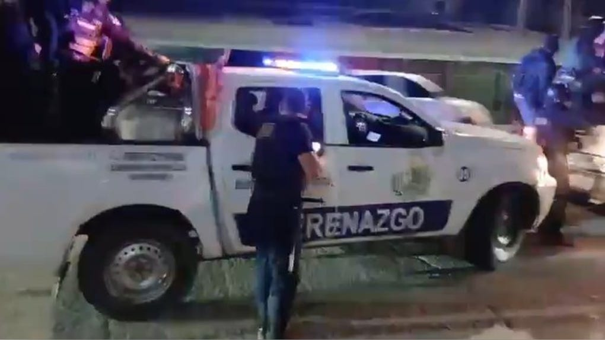

Una jornada de extrema tensión se vivió este sábado en la región Ucayali, donde el paro de transportistas en protesta por el alza del precio de los combustibles derivó en enfrentamientos con la Policía Nacional. El saldo oficial reporta cinco policías heridos, once personas detenidas y cuantiosos daños materiales en la vía Federico Basadre, principal arteria que conecta Pucallpa con el resto del país.
Los manifestantes, en su mayoría conductores de camiones y colectivos interprovinciales, bloquearon varios puntos críticos de la carretera con llantas en llamas y escombros, exigiendo al Gobierno Central la reducción del Impuesto Selectivo al Consumo (ISC) y un subsidio directo al diésel. La medida de fuerza, que se extendió por más de 12 horas, provocó el desabastecimiento de combustible en varias estaciones de servicio y el pánico entre los viajeros que quedaron varados.
Fuentes de la Dirección Regional de Transportes indicaron que el enfrentamiento más violento se registró cerca del kilómetro 18, cuando un grupo de aproximadamente 200 transportistas intentó tomar la garita de peaje. Los agentes del orden, respaldados por unidades motorizadas y el escuadrón de emergencia, realizaron un operativo de desalojo que derivó en el uso de gas lacrimógeno y balas de goma. Los heridos fueron trasladados al Hospital Regional de Pucallpa, donde se reporta que dos de ellos permanecen en observación por contusiones severas, aunque fuera de peligro.

El Ministerio de Energía declara emergencia en el suministro
Ante la gravedad de la situación, el Ministerio de Energía y Minas (Minem) emitió una declaratoria de emergencia en el abastecimiento de combustibles para la región Ucayali. La medida, publicada en la tarde de este sábado, autoriza a Petroperú y a las principales distribuidoras a realizar operaciones extraordinarias para garantizar el suministro a los sectores de salud, educación y transporte público básico.
El ministro de Energía, en declaraciones a la prensa, señaló que "la emergencia responde a la necesidad de proteger a la población y evitar un colapso logístico en una región de difícil acceso". Asimismo, confirmó que el Ejecutivo evaluaba un paquete de subsidios focalizados para mitigar el impacto del alza internacional de los precios del petróleo.
Anuncio de subsidios y levantamiento del paro
Tras una reunión de emergencia entre representantes del Gobierno Regional de Ucayali, el Ministerio de Transportes y los gremios de transportistas, se alcanzó un acuerdo que puso fin a la medida de fuerza. El Gobierno Central se comprometió a implementar un subsidio extraordinario de S/ 2.50 por galón de diésel para los transportistas de carga y pasajeros de la región, vigente por los próximos tres meses.
El gobernador regional de Ucayali, en conferencia de prensa, confirmó que "el paro ha sido levantado de manera inmediata luego de que el Ejecutivo atendiera el petitorio principal". Además, se conformó una mesa técnica para revisar la estructura de costos del combustible y proponer reformas a largo plazo. Los dirigentes transportistas, por su parte, exhortaron a sus bases a retirar los bloqueos y reanudar las actividades normales a partir de la medianoche.
Balance de la jornada
El Comando Policial de Ucayali reportó que, además de los cinco efectivos heridos, se contabilizan once detenidos, quienes fueron puestos a disposición de la Fiscalía Provincial de Pucallpa por los delitos de disturbios públicos, atentado contra la autoridad y obstrucción de la vía pública. Los detenidos pertenecen a distintos gremios de transportistas y, según fuentes policiales, algunos de ellos registran antecedentes por participar en protestas similares en años anteriores.
En el ámbito sanitario, el Hospital Regional atendió a un total de 18 personas, entre policías y civiles, por intoxicación con gas lacrimógeno y golpes durante los forcejeos. El director del nosocomio informó que todos los pacientes ya fueron dados de alta, excepto un suboficial que permanece en observación por un trauma en la rodilla.
Reacciones políticas y sociales
La congresista por Ucayali, María del Carmen Ochoa, calificó la jornada como "lamentable y evitable" y exigió al Ejecutivo mayor sensibilidad con las regiones amazónicas. "No es posible que nuestros transportistas tengan que llegar a estos extremos para ser escuchados. El costo del combustible en Pucallpa es hasta un 30% más alto que en Lima, y eso no es justo", declaró a los medios locales.
Por su parte, la Cámara de Comercio de Ucayali manifestó su preocupación por las pérdidas económicas derivadas del paro, que estiman en más de S/ 2 millones solo en el sector agroexportador, debido a la imposibilidad de trasladar productos perecibles hacia los mercados de la costa.
Organizaciones de derechos humanos, como el Instituto de Defensa Legal (IDL), hicieron un llamado a la Policía a actuar con proporcionalidad y respeto a los derechos fundamentales durante las protestas sociales. En un comunicado, señalaron que "el uso de la fuerza debe ser el último recurso y siempre bajo criterios de necesidad y razonabilidad".
Perspectivas a futuro
El acuerdo alcanzado establece que en los próximos 15 días se instalará una comisión multisectorial que incluirá a representantes del Minem, el MTC, el Gobierno Regional y los gremios de transportistas para revisar la estructura de precios de los combustibles en la Amazonía. Se espera que este grupo proponga medidas que eviten futuras paralizaciones y garanticen un suministro estable y a precios justos.
Mientras tanto, la circulación en la carretera Federico Basadre fue restablecida por completo al promediar las 9 de la noche, luego de que los manifestantes retiraran los bloqueos y las unidades de limpieza municipal despejaran los residuos. El tránsito se normalizó progresivamente, aunque se reportaron largas filas de vehículos que esperaban reabastecerse en las estaciones de servicio que permanecieron cerradas durante la protesta.
El paro en Ucayali se suma a una serie de movilizaciones similares en otras regiones del país, donde el alza de los combustibles ha generado malestar en el sector transporte. No obstante, el anuncio del subsidio focalizado abre una ventana de diálogo que las autoridades esperan aprovechar para construir una política energética más inclusiva y descentralizada.
La jornada deja una lección clara: la amazonía peruana no puede ser marginada en las decisiones que afectan su desarrollo y su vida cotidiana. El equilibrio entre el orden público y la atención de demandas sociales seguirá siendo uno de los principales desafíos para el actual gobierno, en un contexto de inflación y crisis económica global.